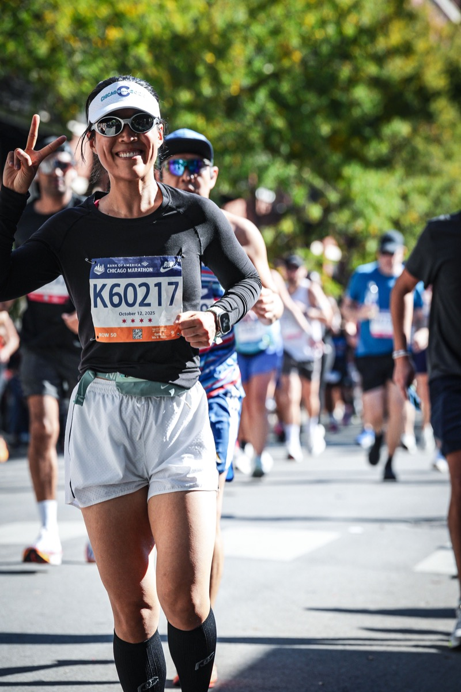

Beyond the Research
When I'm not analyzing education data, you'll likely find me on a running trail or exploring a new city.

Marathon Runner
I ran the 2025 Bank of America Chicago Marathon in October 2025. Training for and completing a marathon has taught me about patience, persistence, and the importance of pacing — lessons that translate naturally to the doctoral journey. There is something deeply satisfying about committing to a goal that demands both daily discipline and long-term vision.
Running is also how I recharge. Madison's lakeside trails and arboretum paths provide the perfect counterbalance to hours of data analysis and writing.
Other Interests
Travel
Having lived in China, Canada, Thailand, and the United States, I've learned that the best way to understand a place is to get lost in it — preferably with good food nearby.
Reading
I read education policy papers for work and novels for survival. Sometimes I accidentally cite a fictional character in conversation.
Baking
Flour, butter, sugar, heat — feeling like magic. Turns out measuring things precisely is a transferable skill from quantitative research.